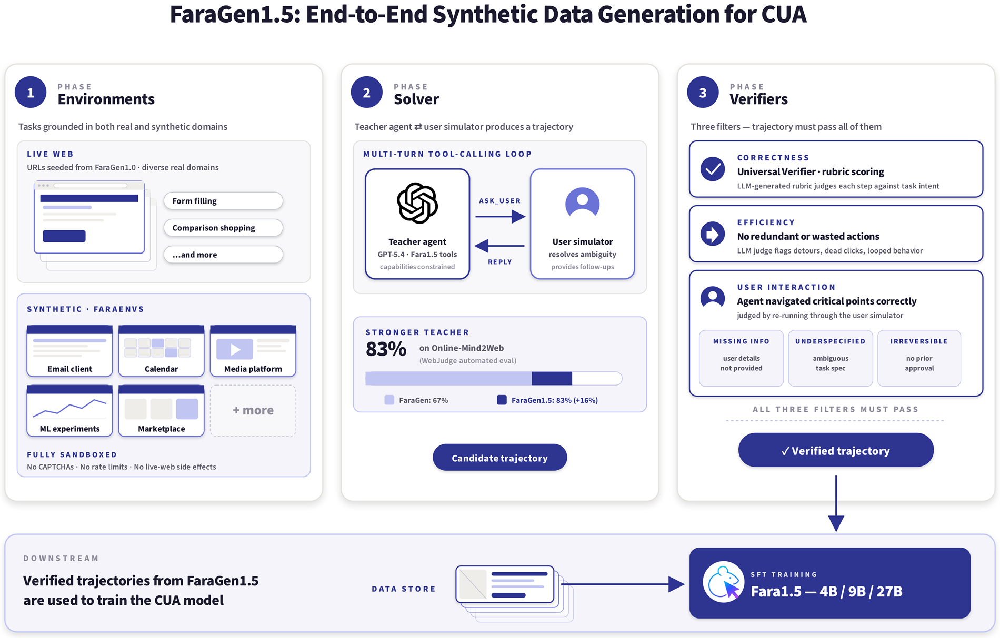
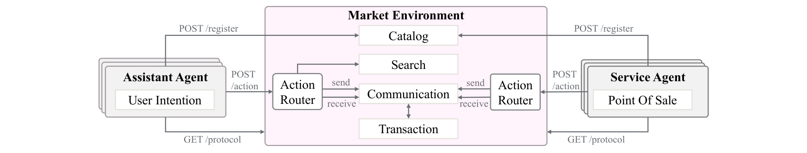
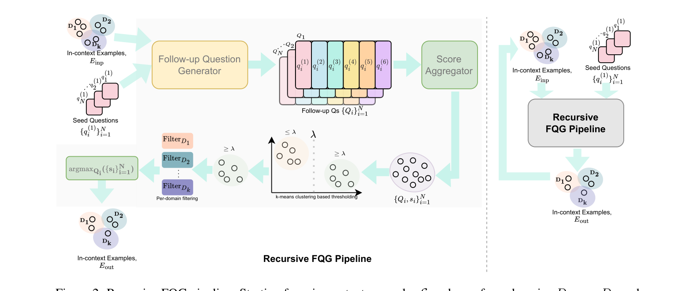

I am interested in understanding the capabilities and limitations of AI systems. My research focuses on how conversational agents, computer-use agents, and multimodal systems reason, fail, and interact with their environments. I build evaluation frameworks, diagnostic tools, and experimental environments that help move beyond measuring whether a system works toward understanding why it succeeds or fails.
Research
-
2026
Synthetic Environment Design for Computer-Use Agents

How can we systematically generate training experiences that expose computer-use agents to interaction skills that are underrepresented in real-world web data?
TL;DR This work investigates environment and task design for browser-based agents. I developed synthetic web environments and curated task distributions covering diverse user workflows and UI interaction primitives. These environments were used to generate trajectories for training and evaluating computer-use agents, enabling controlled coverage of skills that are difficult to acquire reliably from live-web interactions.
-
2026
Understanding Failure Modes in Tool-Using Agents
What are the dominant failure modes in tool-using agents, and how do they contribute to downstream task failures?
TL;DR This work investigates the structure of failures in agent trajectories. It identifies recurring failure modes, characterizes their behavioral signatures, and studies how they propagate into downstream outcomes. By separating root causes from final task failures, the work aims to provide a principled framework for diagnosing, comparing, and improving agentic systems.
-
2026
When Do Agents Go Wrong: A Failure-Centric Evaluation of Agentic Systems
How can we evaluate LLM-based agentic systems at the trajectory level, localize execution pathologies, and separate root causes from downstream outcomes without task-specific ground truth?
TL;DR This work shifts agent evaluation from outcome-centric scoring to failure-centric trajectory diagnostics. It introduces a Unified Failure Taxonomy for execution traces and reference-free meta-metrics, Tool Usage Entropy (TUE), Plan Distribution Divergence (PDD), and Reasoning-Action Correlation (RAC). These metrics capture tool-use diversity, planning stability, and reasoning-action alignment. The framework is used as a diagnostic lens for interpreting, auditing, and debugging agentic behavior.
-
2025
Magentic Marketplace: An Open-Source Environment for Studying Agentic Markets

How can we study two-sided agentic markets end to end, where assistant agents represent consumers and service agents represent businesses? How do search, communication, negotiation, and transaction protocols shape welfare, manipulation resistance, and behavioral bias?
TL;DR This work introduces Magentic Marketplace, an open-source simulated environment for agentic economies. It supports the full marketplace lifecycle, including search, messaging, proposals, and payments. The platform is used to probe consumer welfare, consideration-set size effects, manipulation attacks, and search and proposal bias. The main contribution is a controlled testbed for designing and stress-testing agentic market mechanisms before deployment.
-
2025
From Recall to Creation: Generating Follow-Up Questions using Bloom's Taxonomy and Grice's Maxims

How can we systematically evaluate the cognitive capabilities and limitations of conversational AI systems beyond surface-level task success?
TL;DR This work introduces a cognitively-grounded evaluation framework that probes conversational agents across increasing levels of reasoning complexity. Combining Bloom's Taxonomy-based cognitive scaffolding with Grice's Maxims based evaluation principles, the framework enables fine-grained analysis of where and how conversational systems fail, moving beyond traditional accuracy-centric evaluation.
-
2024
Whisper-ing with Subtitles: Making TV Shows Chatty for All
How can we improve accessibility for the Deaf and Hard-of-Hearing community in Indian languages by building resources and models for automated closed captioning of TV content?
TL;DR This work introduces an automated closed-captioning framework for Indian TV shows. Additionally, we contribute a TV-show speech corpus in Hindi and Marathi for domain-specific model adaptation. The system combines speech recognition, audio-event detection, and timestamp alignment to generate context-rich closed captions that capture both spoken dialogue and non-verbal audio cues, making television content more accessible to DHH viewers.
Experience
-
Aug 2025 — Present
Research Intern · Microsoft Research · Advisor: Akshay Nambi
Worked on synthetic environment design for Fara1.5 computer-use agents and on controlled experiments for Magentic Marketplace.
-
Dec 2023 — Aug 2025
Project Research Associate · CFILT, IIT Bombay · Advisor: Pushpak Bhattacharyya
Led research on follow-up question generation for in-car assistants and automated closed captioning for Indian TV shows.
-
Jan 2023 — Jul 2023
NLP Research Intern · Speech Lab, NTU Singapore · Advisor: Prof. Chng Eng Siong
Evaluated statistical language models for conversational and code-switched speech, and applied quality filtering for data augmentation.
-
Jul 2022 — Mar 2023
TxNLP Intern · Textify AI
Built a passive-to-active voice conversion service (PassivePy, spaCy) and fine-tuned models for classification, summarization, QA, and formality style transfer.
-
Sep 2021 — Dec 2022

Teaching Assistant · BITS Pilani
TA for Approximation Algorithms, Deep Learning, and Advanced Algorithms & Complexity.
Education
-
2021 — 2023
M.E., Computer Science
Birla Institute of Technology & Science, Pilani
-
2016 — 2020
B.E., Computer Engineering
University of Mumbai
Selected Projects
-
Document Classification — FinCausal & BBC News
Hierarchical Attention Network for BBC News classification, and a BERT model reaching 0.97 F1 on the FinCausal causal-classification task.
Python · PyTorch · Transformers · BERT
-
Conversational Fine-Tuning of LLaMA-3 (Unsloth + LoRA)
Fine-tuned LLaMA-3 1B/3B on multi-turn dialogue (FineTome-100k) in under five minutes on a single GPU, improving coherence and response formatting.
Python · PyTorch · Unsloth · LoRA · LLaMA-3
-
PoET Blockchain Simulation
A Proof-of-Elapsed-Time land-management platform with cryptographic property tokenisation and Merkle-root-anchored, tamper-proof transaction records.
Python · Cryptography · Merkle Trees